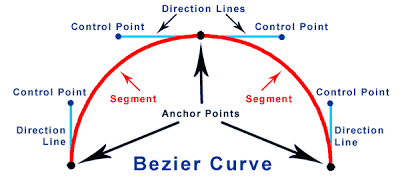
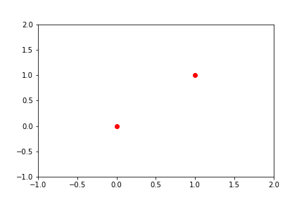
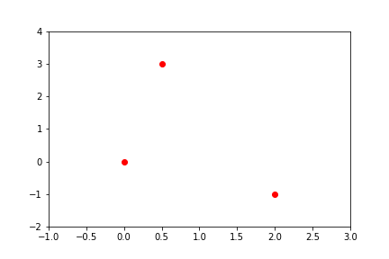
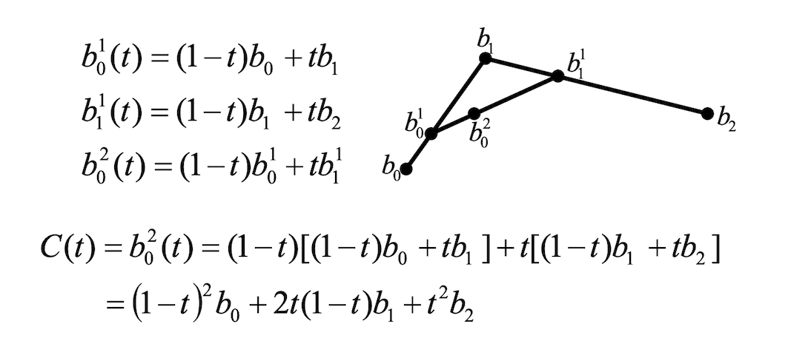
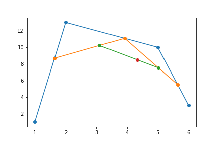
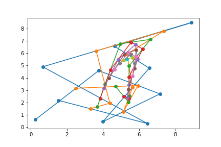

This is my go at Exercise 2.8 in A Programmer’s Introduction to Mathematics. The task is to write a program that computes and animates a Bézier curve.
The code is quite long, and I wrote more sophisticated versions as I went along, so I will include them all here in a tabbed block, and continue with the text below.
%matplotlib inline
import numpy as np
import matplotlib.pyplot as plt
from matplotlib import animation, rc
rc('animation', html='html5')
def bezier_curve_plots(points, static_t=.64):
# input validation
if len(points) < 2:
raise ValueError('Need at least 2 points to generate a Bézier curve.')
if type(points[0]) == list:
points = [np.array(p) for p in points]
t = np.linspace(0, 1, 200) # a vector of 200 evenly spaced values from 0 to 1
points = [np.vstack(p) for p in points] # facilitate vector multiplication
static_points = [np.vstack(p) for p in points]
fig, ax = plt.subplots(figsize=(12, 6.75), ncols=2, nrows=2)
ctrl_xs, ctrl_ys = list(zip(*points))
width = max(ctrl_xs) - min(ctrl_xs)
height = max(ctrl_ys) - min(ctrl_ys)
the_axes = [min(ctrl_xs) - width / 8,
max(ctrl_xs) + width / 8,
min(ctrl_ys) - height / 8,
max(ctrl_ys) + height / 8]
original_lines, = ax[0,0].plot(ctrl_xs, ctrl_ys, 'o-')
ax[0,1].plot(ctrl_xs, ctrl_ys, 'o-')
ax[1,0].plot(ctrl_xs, ctrl_ys, 'o-')
ax[1,1].plot(ctrl_xs, ctrl_ys, 'C7o')
initial_ctrl, = ax[0,0].plot(points[0][0], points[0][1], 'ko', markersize=10)
ax[0,1].plot(points[0][0], points[0][1], 'ko', markersize=10)
ax[1,0].plot(points[0][0], points[0][1], 'ko', markersize=10)
ax[1,1].plot(points[0][0], points[0][1], 'ko', markersize=10)
end_ctrl, = ax[0,0].plot(points[-1][0], points[-1][1], 'ko', markersize=10)
ax[0,1].plot(points[-1][0], points[-1][1], 'ko', markersize=10)
ax[1,0].plot(points[-1][0], points[-1][1], 'ko', markersize=10)
ax[1,1].plot(points[-1][0], points[-1][1], 'ko', markersize=10)
t_text1 = ax[0,1].text(0.05, 0.9, f'$t = {static_t}$', transform=ax[0,1].transAxes)
t_text2 = ax[1,0].text(0.05, 0.9, '', transform=ax[1,0].transAxes)
t_text3 = ax[1,1].text(0.05, 0.9, '', transform=ax[1,1].transAxes)
style = dict(xytext=(5,5), textcoords='offset pixels', ha='left', size=10)
#############
# SUBPLOT 3 (mostly)
#############
# Create a plotting space for each iteration of de Casteljau
plotting_spaces = [ax[1,0].plot([], [], 'o-')[0] for _ in range(len(points) - 1)]
# Initial annotations for Subplots 3 and 4
for i, p in enumerate(points):
ax[0,0].annotate(f'$P_{{{i}}}$', xy=p, color=original_lines.get_color(), **style)
ax[0,1].annotate(f'$P_{{{i}}}$', xy=p, color=original_lines.get_color(), **style)
ax[1,0].annotate(f'$P_{{{i}}}$', xy=p, color=original_lines.get_color(), **style)
ax[1,1].annotate(f'$P_{{{i}}}$', xy=p, color=original_lines.get_color(), **style)
annotations, point_sets = [], []
while len(points) > 1:
points = [find_split(points[i], points[i+1], t) for i in range(len(points) - 1)]
point_sets.append(points)
annotations.append([ax[1,0].annotate('', xy=(0,0), **style)
for i in range(len(points) - 1)])
static_points = [find_split(static_points[i], static_points[i+1], static_t)
for i in range(len(static_points) - 1)]
ax[0,1].plot(*list(zip(*static_points)), 'o-')
#############
# SUBPLOT 4 #
#############
x, y = points[0]
# Create a plot for line and final split point
curve, final_point = (ax[1,1].plot([], [], 'C6-', markersize=1)[0],
ax[1,1].plot([], [], 'C6o', markersize=15, lw=1)[0])
def init():
t_text2.set_text('')
for i, _ in enumerate(plotting_spaces):
plotting_spaces[i].set_data([], [])
t_text3.set_text('')
curve.set_data([], [])
final_point.set_data([], [])
return plotting_spaces
def update(num): # value of `num` is advanced by the animation function
t_text2.set_text(f'$t = {round(num / len(t), 2)}$')
t_text3.set_text(f'$t = {round(num / len(t), 2)}$')
for i, _ in enumerate(plotting_spaces):
# SUBPLOT 3
plotting_spaces[i].set_data([p[0][num] for p in point_sets[i]],
[p[1][num] for p in point_sets[i]])
plotting_spaces[i].axes.axis(the_axes)
for j, _ in enumerate(annotations[i]):
annotations[i][j].set_text(f'$P_{{{j}}}^{{{i + 1}}}$')
annotations[i][j].set_color(plotting_spaces[i].get_color())
annotations[i][j].xy = (point_sets[i][j][0][num],
point_sets[i][j][1][num])
if i == len(plotting_spaces) - 1: # Make the final point bigger
plotting_spaces[i].set_markersize(15)
# SUBPLOT 4
curve.set_data(x[:num], y[:num])
curve.axes.axis(the_axes)
final_point.set_data(x[num], y[num])
return plotting_spaces
return animation.FuncAnimation(fig, update, len(t), fargs=[],
init_func=init, interval=10, blit=True)
def random_points(n):
return np.hstack((np.vstack(np.linspace(1, n, n)), np.random.rand(n, 1) * 100))
def make_bezier(P):
P = [np.vstack(p) for p in sorted(P)]
t = np.linspace(0, 1, 100) # a vector of 100 evenly spaced values from 0 to 1
if len(P) < 2:
raise ValueError("Need at least 2 points")
elif len(P) == 2:
x,y = (1 - t) * P[0] + t * P[1]
elif len(P) == 3:
x,y = ((1 - t) ** 2) * P[0] + \
(2 * t * (1 - t)) * P[1] + \
(t ** 2) * P[2]
elif len(P) == 4:
raise ValueError("Cubic curve. Come back later")
else:
raise ValueError("too many points")
# Reference to https://stackoverflow.com/questions/28074461/animating-growing-line-plot-in-python-matplotlib
# Set up the graph
fig, ax = plt.subplots()
line, = ax.plot(x, y, 'k')
# Plot the static points
pts = np.array(P).T
ax.plot(pts[:,0], pts[:,1], 'ro')
# This function runs repeatedly for len(t) times as specified below
# x and y are a list of values, computed once for each value in t
def update(num, x, y, line):
line.set_data(x[:num], y[:num])
line.axes.axis([np.min(pts[:,0]) - 1,
np.max(pts[:,0]) + 1,
np.min(pts[:,1]) - 1,
np.max(pts[:,1]) + 1])
return line,
return animation.FuncAnimation(fig, update, len(t), fargs=[x, y, line], interval=25, blit=True)
linear_anim = make_bezier([[0,0],[1,1]])
quadratic_anim = make_bezier([[0,0],[.5,3],[2,-1]])
# linear_anim.save('./content/images/bezier/linear_bezier.gif', writer='imagemagick', fps=24)
# quadratic_anim.save('./content/images/bezier/quadratic_bezier.gif', writer='imagemagick', fps=24)
def find_split(this_point, next_point, t):
return (1 - t) * this_point + t * next_point
def animate_splits(points):
# input validation
if len(points) < 2:
raise ValueError('Need at least 2 points to generate a Bézier curve.')
if type(points[0]) == list:
points = [np.array(p) for p in points]
t = np.linspace(0, 1, 200) # a vector of 200 evenly spaced values from 0 to 1
points = [np.vstack(p) for p in points] # facilitate vector multiplication
# Set up the graph, layout, and static elements
fig, ax = plt.subplots()
ctrl_xs, ctrl_ys = list(zip(*points))
width = max(ctrl_xs) - min(ctrl_xs)
height = max(ctrl_ys) - min(ctrl_ys)
the_axes = [min(ctrl_xs) - width / 8,
max(ctrl_xs) + width / 8,
min(ctrl_ys) - height / 8,
max(ctrl_ys) + height / 8]
ax.plot(ctrl_xs, ctrl_ys, 'o-') # Lines between all control points
ax.plot(points[0][0], points[0][1], 'ko', markersize=10) # Initial control point
ax.plot(points[-1][0], points[-1][1], 'ko', markersize=10) # End control point
# Need to create a plotting space for each iteration of de Casteljau
plotting_spaces = [ax.plot([], [], 'o-')[0] for _ in range(len(points) - 1)]
def init():
for i, _ in enumerate(plotting_spaces):
plotting_spaces[i].set_data([], [])
return plotting_spaces
def update(num, points): # value of `num` is advanced by the animation function
for i, _ in enumerate(plotting_spaces):
points = [find_split(points[j], points[j+1], t) for j in range(len(points) - 1)]
# `points` consists of all split points in the current iteration
# each point consists of an x list and a y list, each with t number of coordinates
plotting_spaces[i].set_data([p[0][num] for p in points], # list of xs
[p[1][num] for p in points]) # list of ys
plotting_spaces[i].axes.axis(the_axes)
if i == len(plotting_spaces) - 1: # Make the final point bigger
plotting_spaces[i].set_markersize(15)
return plotting_spaces
return animation.FuncAnimation(fig, update, len(t), fargs=[points],
init_func=init, interval=10, blit=True)
points = [[1, 1], [2,13], [5, 10], [6,3], [8,-5]]
fivepts_anim = animate_splits(points)
# fivepts_anim.save('./content/images/bezier/fivept_bezier.mp4', extra_args=['-vcodec', 'libx264'], fps=60)
def trace_curve(points):
# input validation
if len(points) < 2:
raise ValueError('Need at least 2 points to generate a Bézier curve.')
if type(points[0]) == list:
points = [np.array(p) for p in points]
t = np.linspace(0, 1, 200) # a vector of 200 evenly spaced values from 0 to 1
points = [np.vstack(p) for p in points] # facilitate vector multiplication
# Set up the graph, layout, and static elements
fig, ax = plt.subplots()
ctrl_xs, ctrl_ys = list(zip(*points))
width = max(ctrl_xs) - min(ctrl_xs)
height = max(ctrl_ys) - min(ctrl_ys)
the_axes = [min(ctrl_xs) - width / 8,
max(ctrl_xs) + width / 8,
min(ctrl_ys) - height / 8,
max(ctrl_ys) + height / 8]
ax.plot(ctrl_xs, ctrl_ys, 'C7o') # Intermediate control points
ax.plot(points[0][0], points[0][1], 'ko', markersize=10) # Initial control point
ax.plot(points[-1][0], points[-1][1], 'ko', markersize=10) # End control point
while len(points) > 1:
points = [find_split(points[i], points[i+1], t) for i in range(len(points) - 1)]
x, y = points[0]
# Create a plot for line and final split point
line, final_point = (ax.plot([], [], 'C6-', markersize=1)[0],
ax.plot([], [], 'C6o', markersize=15, lw=1)[0])
t_text = ax.text(0.05, 0.9, '', transform=ax.transAxes)
def init():
line.set_data([], [])
final_point.set_data([], [])
t_text.set_text('')
return (line, final_point, t_text)
def update(num):
line.set_data(x[:num], y[:num])
line.axes.axis(the_axes)
final_point.set_data(x[num], y[num])
t_text.set_text(f'$t = {round(num / len(t), 2)}$')
return (line, final_point, t_text)
return animation.FuncAnimation(fig, update, len(t), init_func=init, interval=10, blit=True)
points = [[1, 1], [2,13], [5, 10], [6,3], [8,9]]
bezier_curve = trace_curve(points)
# bezier_curve.save('./content/images/bezier/bezier_curve_trace.mp4', extra_args=['-vcodec', 'libx264'], fps=60)
Sample results
Input:
points = [[1, 1], [2,13], [5, 10], [6,3]]
multi_plots = bezier_curve_plots(points)
Output:
I was already well-acquainted with manipulating Bézier curves from working with the Pen tool in Photoshop and Illustrator.

In graphics programs, you can create Bézier curves of arbitrary complexity by defining a start point, end point, and any number of control points in between. The curve passes through all the control points and the shape of the curve can be further manipulated using “handles” on the control points.
However, this is a top-down, end-user way of looking at control points that abstracts away the process of mathematically generating the curve. At first glance, my searches for understandable explanations of the math turned up short.
So, since the problem also said to look up the definition of quadratic and cubic Bézier curves, I started out by brute-forcing it. That still took a lot of time because matplotlib is quite complicated and getting animations working for the first time was not so straightforward.
Brute force
A cursory read through the Wikipedia definition turned up a lot of rather opaque equations. Finally I managed to find some basic definitions here.
Bold \(\textbf B\) and \(\textbf P_n\) are 2D coordinates that are treated as vectors in these equations. These functions run over the range \(0 \leq t \leq 1\) and output a set of points \(\textbf B\) that generate a Bézier curve that fits the given constraints.
$$ \begin{aligned}
\textbf B_{\textrm{linear}}(t) &= (1 - t)\textbf P_0 + t \textbf P_1 \\
\textbf B_{\textrm{quadratic}}(t) &= (1 - t)^2 \textbf P_0 + 2t (1 - t) \textbf P_1 + t^2 \textbf P_2 \\
\textbf B_{\textrm{cubic}}(t) &= (1 - t)^3\textbf P_0 + 3(1 -t)^2 u \textbf P_1 + 3(1 - t)t^2 \textbf P_2 + t^3 \textbf P_3
\end{aligned} $$
That got me this far:
 
I’m basically a matplotlib Picasso! 😅
However, I can’t exactly say I fully understood what I was doing.
I could see some pattern to the equations—some Pascal’s triangle action happening with the coefficients of those polynomials—but I couldn’t really understand how to generate the polynomials themselves.
I also noticed that the quadratic curve didn’t actually pass through the second point I had specified, which means that the mathetmatical control points of Bézier curves are a little different than the “end-user” control points I’m used to working with in Illustrator.
When I tried to dig deeper, I found some crazy stuff with what looked like Einstein notation (\(\textbf P^2_0\)), which really threw me for a loop. What does this have to do with matrices?

Dividing lines
It took me a while to figure out what the notation meant.
Maybe I should have just searched on YouTube first:
(I ended up finding this amazing JavaScript [D3] visualization later.)
\(t\) runs over the range \([0,1]\), right? So that means any intermediate value of \(t\) is a fraction.
However, since we’re looking at \(t\) and \(1 - t\), we can look at \(t\) as a split point. For example, when \(t = 0.7\), then \(1 - t = 0.3\), producing a 70/30 split.
Using the illustration above as reference, the points \(b\) with only subscripts (\(b_0, b_1, b_2\)) are the original user-specified control points. Between these three control points, two connecting lines can be drawn.
Let \(t\) be a split point to split each of those lines in two. Since \(t\) varies between \([0,1]\), you can imagine the lines as “rollers” that the points run across. When \(t = 0\), the split points are at the initial end of each line; when \(t = 1\), the split points are at the final end of each line.
Now draw a line between the two split points, and split that line at \(t\). That is the final split point, which traces the curve as \(t\) runs over the range \([0,1]\).
de Casteljau’s algorithm
This can be done recursively to find the curve given any number of control points. You repeat the process until you end up with one line, and thus one split point.
The Einstein-looking notation above thus means:
$$ \textbf P^{r \textrm{ th iteration}}_{i \textrm{ th point}} $$
For the 0th iteration (control points), the superscript \(0\) is usually omitted, it seems.
\(n\) control points require \(n - 1\) iterations to find the final split point, so the task is to find the point \(\textbf P^{n - 1}_0\).
Let’s try working this out from the simplest building block. The split point between any two points is
$$ \begin{bmatrix} x \\ y \end{bmatrix}_{\textrm{split}} =
(1 - t)\begin{bmatrix} x \\ y \end{bmatrix}_{\textrm{beginning}} +
t \begin{bmatrix} x \\ y \end{bmatrix}_{\textrm{end}}
$$
We’ll use NumPy arrays to represent vectors for this.
split_point = (1 - t) * this_point + t * next_point
Now, we need to loop through the initial control points in the following way. \(n\) number of points results in \(n-1\) number of split points.
Assume we input our points as a list of lists. Each iteration, then, should give us a list that is one smaller than the last iteration. And when the length of the list is 1, we know we’ve found our point.
def find_split(this_point, next_point, t):
return (1 - t) * this_point + t * next_point
points = [[1, 1], [2,13], [5, 10], [6,3]]
points = [np.array(p) for p in points]
t = .64 # random number
plt.plot(*list(zip(*points)), 'o-')
while len(points) > 1:
points = [find_split(points[i], points[i+1], t) for i in range(len(points) - 1)]
plt.plot(*list(zip(*points)), 'o-')
# plt.savefig('./split_points2.png')

Doing this with an arbitrary of random points can be kinda fun:
points = np.random.rand(10,2) * 10

Some intermediate results
Animating the intermediate lines:
Tracing the curve:
Crazy curve and annotations:
References
- Save Matplotlib Animations as GIFs, Louis Tiao
- Matplotlib Animation Tutorial, Jake VanderPlas
- Text and Annotation, Jake VanderPlas
- Interpolating Curves, CS 419, UIUC
- Curves and Surfaces, Computer Graphics, Benin School of Computer Science